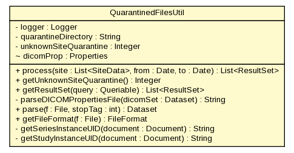

gov.nih.nci.ncia.util
Class QuarantinedFilesUtil

java.lang.Object
 gov.nih.nci.ncia.util.QuarantinedFilesUtil
gov.nih.nci.ncia.util.QuarantinedFilesUtil
public class QuarantinedFilesUtil
- extends java.lang.Object
Handle quarantine file process
|
Method Summary |
static org.dcm4che.data.FileFormat |
getFileFormat(java.io.File f)
getFileFormat is to validate dicom file format @param File - a file |
java.util.List<ResultSet> |
getResultSet(Queriable query)
|
private java.lang.String |
getSeriesInstanceUID(org.w3c.dom.Document document)
|
private java.lang.String |
getStudyInstanceUID(org.w3c.dom.Document document)
|
java.lang.Integer |
getUnknownSiteQuarantine()
|
static org.dcm4che.data.Dataset |
parse(java.io.File f,
int stopTag)
parse method is to parse a dicom file with a given stop tag @param File -
dicom file int - stop tag integer @return Dataset - dicom data set |
private java.lang.String |
parseDICOMPropertiesFile(org.dcm4che.data.Dataset dicomSet)
|
java.util.List<ResultSet> |
process(java.util.List<SiteData> site,
java.util.Date from,
java.util.Date to)
|
| Methods inherited from class java.lang.Object |
clone, equals, finalize, getClass, hashCode, notify, notifyAll, toString, wait, wait, wait |
logger
private static org.apache.log4j.Logger logger
quarantineDirectory
private java.lang.String quarantineDirectory
unknownSiteQuarantine
private java.lang.Integer unknownSiteQuarantine
dicomProp
java.util.Properties dicomProp
QuarantinedFilesUtil
public QuarantinedFilesUtil()
process
public java.util.List<ResultSet> process(java.util.List<SiteData> site,
java.util.Date from,
java.util.Date to)
throws java.lang.Exception
- Throws:
java.lang.Exception
getUnknownSiteQuarantine
public java.lang.Integer getUnknownSiteQuarantine()
- Returns:
- Returns the unknownSiteQuarantine.
getResultSet
public java.util.List<ResultSet> getResultSet(Queriable query)
throws java.lang.Exception
- Throws:
java.lang.Exception
parseDICOMPropertiesFile
private java.lang.String parseDICOMPropertiesFile(org.dcm4che.data.Dataset dicomSet)
throws java.lang.Exception
- Throws:
java.lang.Exception
parse
public static org.dcm4che.data.Dataset parse(java.io.File f,
int stopTag)
throws java.io.IOException
- parse method is to parse a dicom file with a given stop tag @param File -
dicom file int - stop tag integer @return Dataset - dicom data set
- Parameters:
f - stopTag -
- Returns:
-
- Throws:
java.io.IOException
getFileFormat
public static org.dcm4che.data.FileFormat getFileFormat(java.io.File f)
throws java.io.IOException
- getFileFormat is to validate dicom file format @param File - a file
- Parameters:
f -
- Returns:
- FileFormat - a file format detected by dcm parser
- Throws:
java.io.IOException
getSeriesInstanceUID
private java.lang.String getSeriesInstanceUID(org.w3c.dom.Document document)
getStudyInstanceUID
private java.lang.String getStudyInstanceUID(org.w3c.dom.Document document)